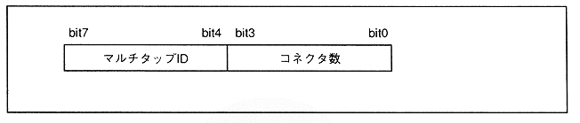

Figure 3.14 Port status configuration

Table 3.5 Relationship between number of connectors and peripherals
Number of connectors | Connected peripherals |
0H | ・ Not connected |
1H | ・ Peripherals are connected directly |
2H to FH | ・ Number of multi-tap taps |